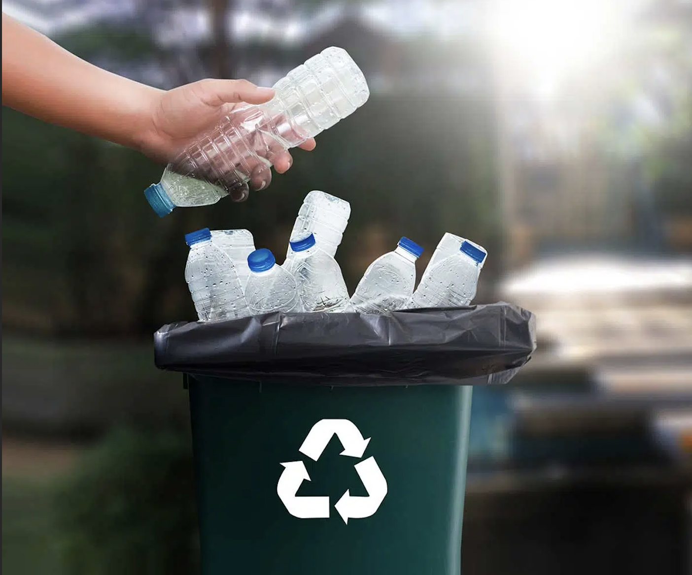

Individual Sustainability Solutions
This page suggests realistic, cheap, easy ways for individuals like you to be sustainabile in your daily life. Small changes in your day-to-day schedule can go a long way in making the world a cleaner place to live!
Click on the empty text boxes to learn more about individual solutions for sustainability.


